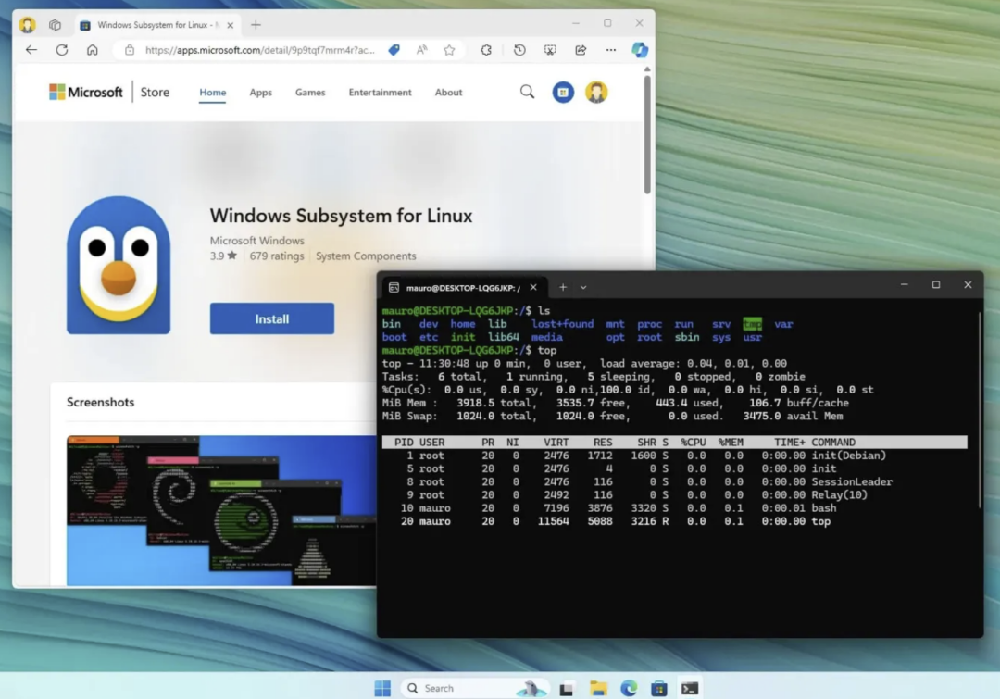
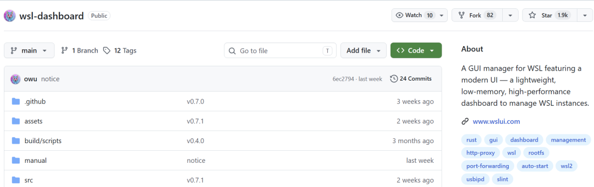
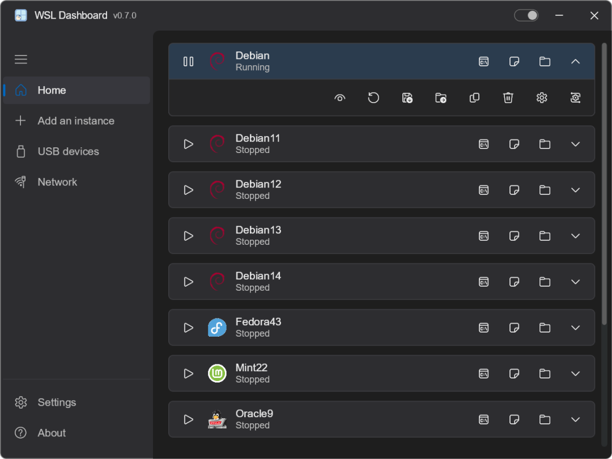
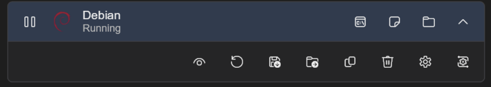
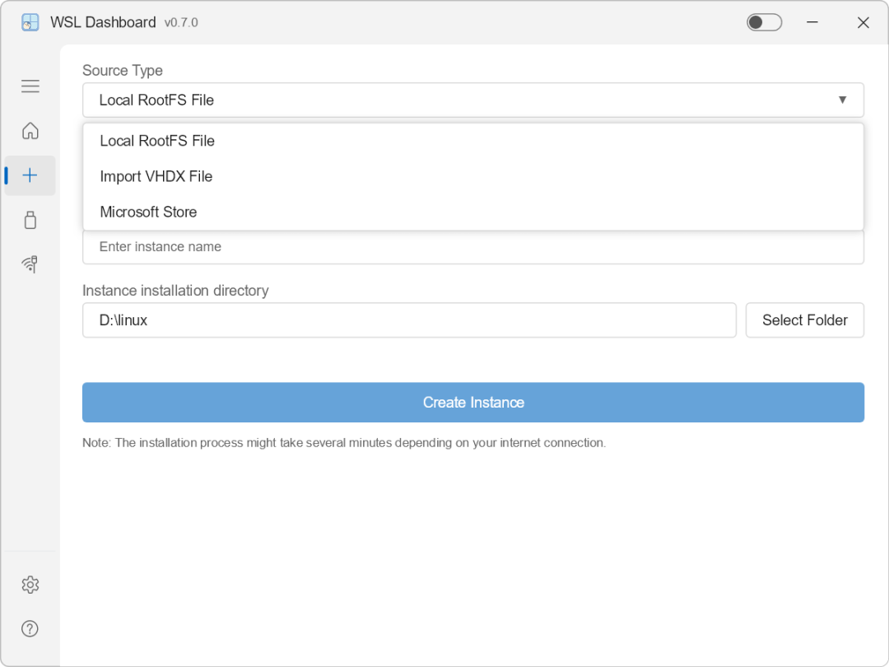
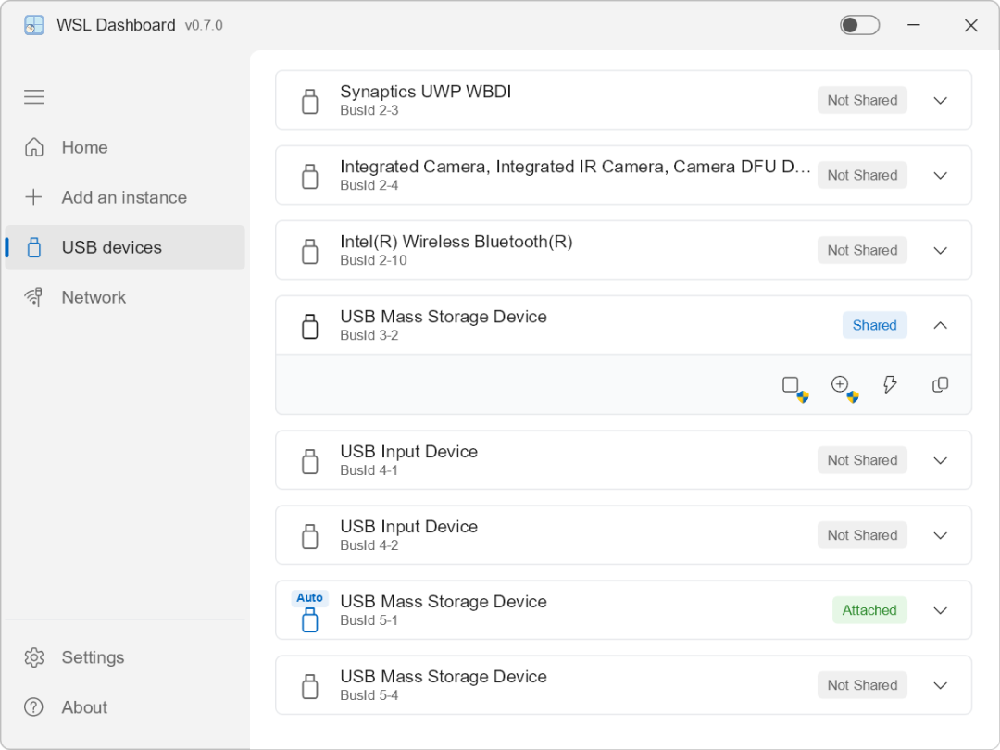
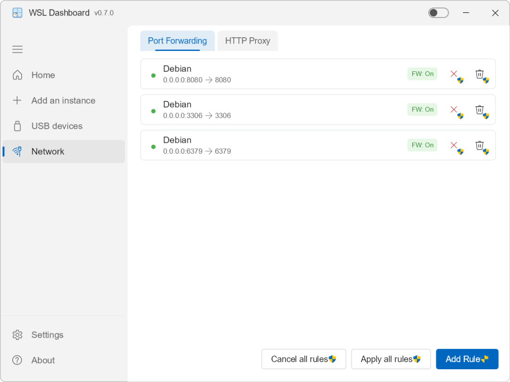
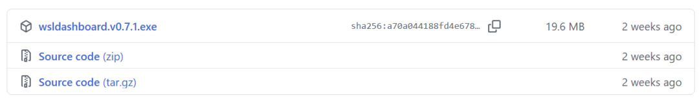
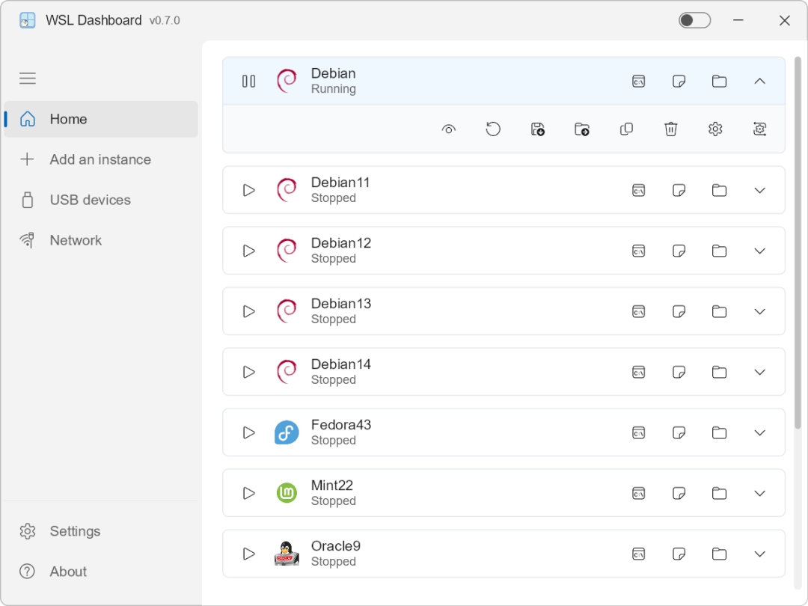

2016年8月，微软在 Windows 10 上推出 WSL。
记得刚用那会儿，觉得终于不用折腾虚拟机了。
在 Windows 里直接跑 Linux，性能接近原生，还能访问 Windows 文件，简直完美。

但长时间用下来，慢慢就发现问题了，WSL的管理基本上全是命令，对小白及其不友好。
之前我想把Ubuntu迁移到别的磁盘，翻了一大堆教程，打开 PowerShell 敲了一堆的命令wsl --export、wsl --unregister、wsl --import...
就因为路径输错了一点，前前后后耗了半个多小时才弄好。
那时候我就忍不住吐槽，微软怎么就不能做一个像VMware那样的可视化管理工具，简单直观一点，非要纯命令行折腾人。
最近在 GitHub 上看到 WSL Dashboard，这个事终于有人做了。

WSL Dashboard 是一个用 Rust 写的 WSL 实例管理面板，目前在 GitHub 上有 1900+ Star。
它其实就是把 WSL 里那些最常用、最容易敲错的操作，变成了一键能搞定的按钮。
底层是用 Rust、Slint、Skia、Tokio 这几套技术搭起来的。
安全和性能都有了。

它把每个 WSL 实例的关键操作都给你。
01 发行版状态管理。
以前你想看WSL状态，想启动或关掉一个，多数人都是上网查命令，复制执行。

现在不用了，一个界面里面，按钮一点就行。
02 VHDX 迁移。
以前要搞多条命令来完成一个事，现在它从头到尾把整合流程都打通，一步到位。
就拿迁移 VHDX 文件这事。
这放在以前。
一般是先上网查文档，找到正确的命令格式，确认源路径和目标路径，执行命令，然后祈祷不要出错。
今天你用 WSL Dashboard ，选中点迁移，选目标磁盘点确认，就结束了。
整个过程不需要记命令，自动识别路径，不用担心敲错参数。

03 系统托盘集成。
它能一直在windows右下角的系统托盘挂着 ，内存占用也就10MB左右。
双击托盘图标就能秒切窗口，右键菜单有各种常用功能。

04 USB 设备管理。
平时需要在WSL管理USB设备的朋友，这个功能用起来方便好多。
它把usbipd-win整合进去，不用敲命令，在界面上就能一键绑定、挂载、管理USB设备。

05 网络功能配置。
这个功能做开发的朋友会经常用到。
像端口转发管理、自动创建防火墙规则、全局 HTTP 代理配置，这些以前需要手动配置的东西，现在都能在界面里直接操作。

除了核心管理功能，WSL Dashboard 还有一些好的细节。
它支持 26 种语言，包括中文。
对国内开发者也比较友好。
快速集成工具。
一键启动 Windows Terminal、VS Code 或文件资源管理器，还能自定义工作目录和启动脚本钩子。
对于习惯在 VS Code 里开发的用户来说，这个功能能提升效率。
Rust 带来的性能优势。
这些功能组合在一起，再加上 Rust 带来的性能优势，体验更顺滑。
启动速度接近即时，界面响应流畅。
看完这些功能，相信各位已经迫不及待了。
最低门槛的打开方式是：去 GitHub Releases 页面下载最新的 wsldashboard.exe，直接运行就行，不需要安装。

如果你已经有 WSL 发行版，打开就能看到所有实例的状态。

到这里不足也给大家提提。
目前只支持 Windows 10/11，需要 WSL 2。
有人希望增加安装程序，现在下载新版本都是独立的文件，没法固定到开始菜单。
作者在 GitHub WSL 官方讨论区介绍项目时说：我开发 WSL Dashboard 的目标不是用 GUI 包装每个命令，而是把最常见、最容易出错的操作变成一键动作。
如果你也在用 WSL，而且经常需要管理多个发行版、做迁移备份、或者配置网络和 USB 设备，这个工具值得试一下。
能省掉不少查文档和试错的时间。
写在最后
我也经常用 WSL，发现 WSL Dashboard 确实能省很多事。
以前查发行版状态、迁移磁盘、克隆备份，得打开黑框框敲命令，现在用一个界面都能搞定了。
而且它不需要安装，下载就能用，支持中文界面。
经常需要管理多个 WSL 发行版的朋友，推荐试试。
项目基于 GPL-3.0 协议开放，感兴趣的同学可以去 GitHub 仓库看看源码和文档。
开源地址：https://github.com/owu/wsl-dashboard
既然看到这了，欢迎随手点赞、在看、转发，也可以给我个星标⭐，接收最新的文章，我们下期见！